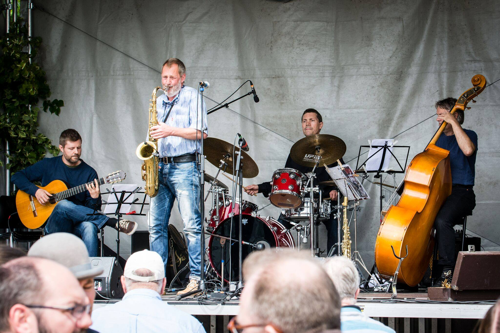
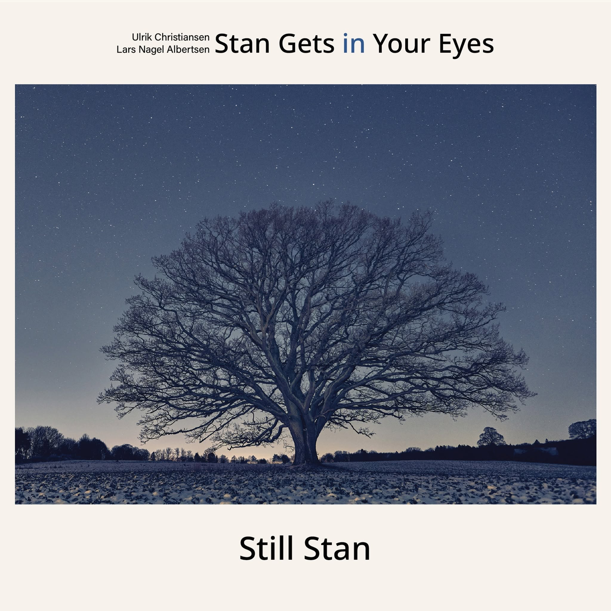

Musik
Lyt med på Spotify.
Billeder
Fra scenen og bagom.




Se kommende koncerter (samlet oversigt, alle Lars' optrædener) på forsiden.

Danmarks ældste Bossa Nova-orkester — debuterede ved Copenhagen Jazzfestival i 1986, og er mere aktuelle end nogensinde.
lyt med ↓Lyt med på Spotify.
Fra scenen og bagom.


Se kommende koncerter (samlet oversigt, alle Lars' optrædener) på forsiden.